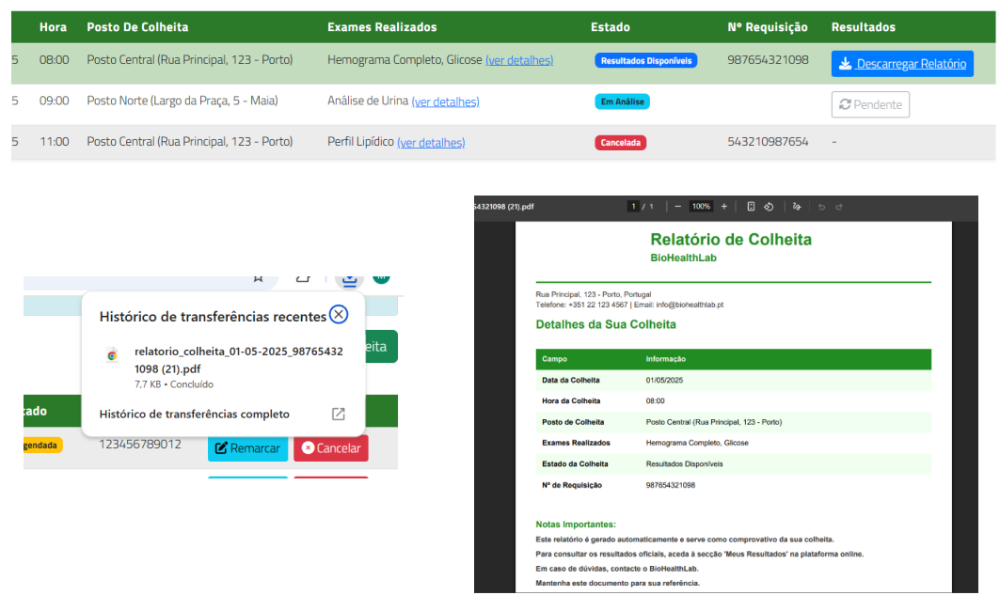

Project Overview
The BioHealthLab project focuses on the advanced processing of physiological signals to improve diagnostic accuracy. By integrating various biosensors, we develop algorithms that can detect early signs of cardiovascular and neurological anomalies.

Signal Processing
Advanced filtering and feature extraction from ECG and EMG signals using Python and specialized Bio-toolkits.

Research Focus
Developing non-invasive monitoring systems that provide real-time feedback for clinical research environments.

Technical Core
- Algorithms: Implementing Machine Learning models for predictive health analytics.
- Hardware Integration: Interfacing with professional medical-grade sensors and DAQ systems.
- Compliance: Ensuring data handling follows healthcare privacy standards (GDPR/HIPAA).